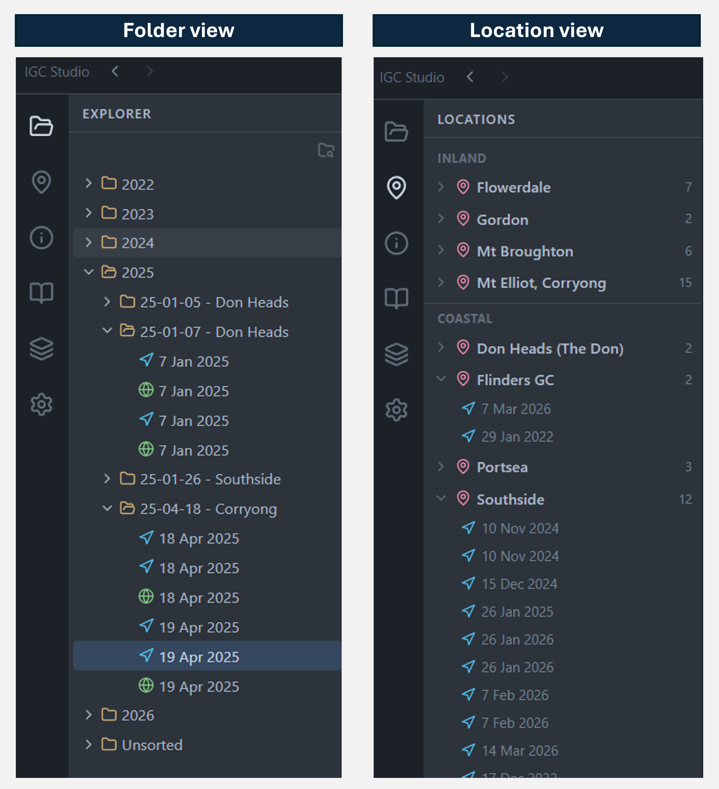
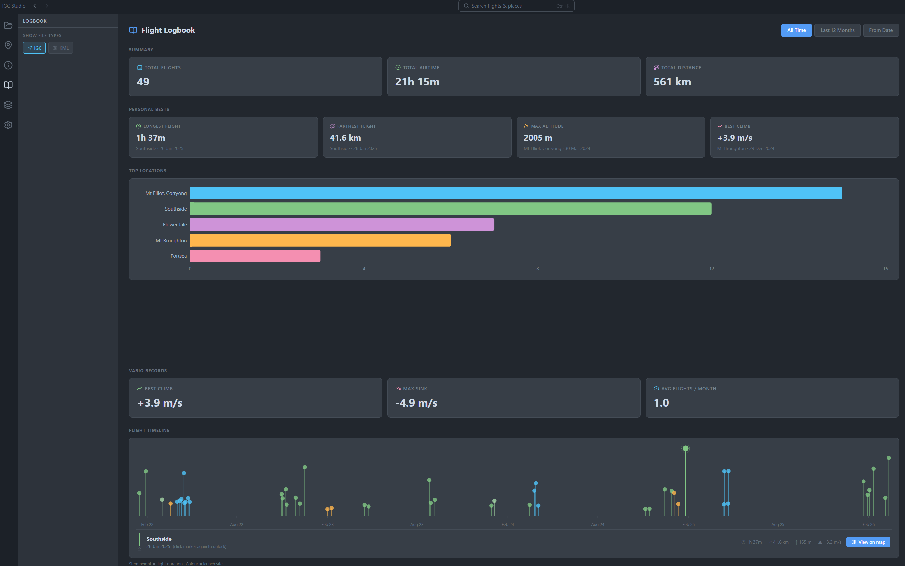
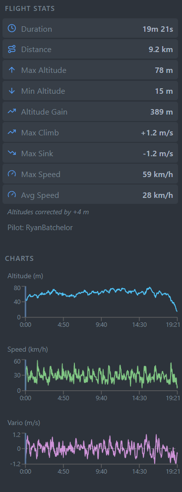

IGC Studio

A desktop paragliding flight log viewer built by a pilot, for pilots.

IGC Studio is a free, open-source desktop app for paraglider and hang glider pilots to browse, replay, and analyse flight logs. It runs entirely offline — no accounts, no cloud uploads, no subscriptions.
Load an .igc or .kml file and immediately see your flight on a 3D terrain map with altitude-gradient colouring, full statistics, interactive charts, and an animated timeline scrubber. Open a folder of years of flights and IGC Studio clusters them into launch sites automatically, so you can explore your history by location rather than digging through folders.
Screenshots
File Browser & Location Grouping

Browse your flights as a VS Code-style folder tree (left) or grouped automatically by launch site (right). Site names are resolved via OpenStreetMap reverse geocoding and can be renamed with a double-click.
3D Map — Altitude-Gradient Track & Site Guide Zones

The full app layout: activity bar, resizable side panels, CesiumJS 3D globe, and the right-hand stats/charts panel. The flight track is colour-coded by altitude. Landing zones and no-landing zones from siteguide.org.au are rendered as ground-clamped overlays, with a legend and hover tooltips.
Logbook

The Logbook tab aggregates every flight in your library into a timeline chart. Lollipop markers are sized by flight duration and coloured by launch site. Click a marker to lock it and see stats in the right panel; click View on map to jump straight to that flight.
Flight Statistics

At-a-glance stats for the loaded flight: duration, distance, max altitude, max climb and sink rates. Charts show altitude, speed, and vario profiles against time with a live playback cursor.
Altitude Correction & Flight Trim

Altitude Correction lets you offset the GPS altitude to match terrain at launch — dial it manually or click Auto from terrain (requires a Cesium Ion token). Flight Trim lets you cut away pre-takeoff and post-landing data using a dual-handle range slider overlaid on the altitude profile; a .bak of the original is always kept.
Features
Flight Browsing
- File explorer — VS Code-style tree; browse
.igcand.kmlfiles across folders and years - Locations panel — clusters all flights in your library into launch sites (within 3 km); names resolved via OpenStreetMap reverse geocoding
- Site renaming — double-click any site name to give it a custom label that persists across sessions
- Global search —
Ctrl+Kpalette searches flight sites and individual flights; geocodes any place name so you can fly the camera anywhere - File type filter — toggle IGC and KML visibility independently
- Back / Forward navigation — browser-style history for quick switching between flights and views
Map & Visualisation
- 3D globe — interactive CesiumJS globe; satellite, topo, street, and canvas base layers
- Altitude-gradient flight track — polyline colour-coded from low (blue) to high (red) rendered at GPS altitude
- Animated pilot marker — dot interpolates along the track in sync with the timeline
- Shadow curtain — semi-transparent vertical wall trails behind the glider during playback, showing the ground track and altitude profile simultaneously
- 3D terrain — Cesium World Terrain elevation model (requires a free Cesium Ion token)
- Multiple base layers — ESRI Satellite, ESRI Topo, National Geographic, OpenTopoMap, OpenStreetMap, Bing Aerial, Bing Roads, ESRI Light/Dark Grey, Carto Light/Dark
- Road overlay — ESRI road layer on top of any base
- Map controls — zoom, reset north, fly-to-flight
Airspace
- Australian airspace — downloads the current OpenAir dataset from xcaustralia.org; 3D extruded polygons colour-coded by class (CTR = red, Class D = blue, Restricted = orange, etc.)
- 30-day cache — loads instantly on restart; background check alerts when new data is available
- Manual import — load any
.txtOpenAir file as a fallback - Configurable source URL — change the download endpoint in Settings
Site Guide Zones
- Landing & no-landing zones — zone polygons from siteguide.org.au; ground-clamped overlays on the 3D map
- Colour coding — blue = landing, red = no landing, amber = emergency, orange = no launch, yellow = powerline, orange-red = hazard
- Hover tooltip — zone type and name on mouse-over
- Map legend — shows the zone types present in the loaded data
- 7-day cache
Flight Statistics & Charts
- Stats panel — duration, max/min altitude, altitude gain, max/average speed, total distance
- Live charts — altitude, speed, and vario profiles against time; playback cursor stays in sync
- Unit switching — metric (m, km, km/h) or imperial (ft, mi, kts)
Logbook
- Timeline view — all flights plotted as lollipops sized by duration and coloured by launch site
- Hover / click to lock a flight and see stats in the right panel
- View on map — one click loads the full flight and flies the camera there
- Date filtering — show all flights, last 12 months, or a custom date range
Altitude Correction
- Per-flight offset — dial in a metres adjustment to reconcile GPS altitude against terrain
- Auto from terrain — one-click calculation using the Cesium terrain height at launch
- Persisted — offset saved per-flight in
flight-notes.json; restored automatically on reload
Flight Trim
- Dual-handle range slider — visually trim pre-takeoff and post-landing clutter
- Non-destructive — original file always backed up as
.igc.bakbefore any write - Restore — one-click revert to the original at any time; backup never deleted by the app
Timeline & Playback
- Scrubber — drag to any point in the flight
- Play / pause with variable speed (1× – 50×)
- Jump to start / end
Settings & Customisation
- Dark / light theme
- Default zoom altitude
- Reopen last folder on startup
- Cesium Ion token (enables 3D terrain)
- Bing Maps key (enables Bing imagery layers)
- Airspace source URL
- All settings persisted locally; API keys stored in a separate
.secretsfile excluded from git
Supported File Formats
| Format | Extension | Notes |
|---|---|---|
| IGC | .igc |
FAI flight recorder format; reads B-records (GPS fixes) and H-records (metadata) |
| KML | .kml |
Google Earth format; reads <gx:coord> and <coordinates> track elements |
Installation
Download (Windows)
Grab the latest installer from the Releases page:
IGC Studio_x.x.x_x64-setup.exe— NSIS installer (recommended)IGC Studio_x.x.x_x64_en-US.msi— MSI installer
Run the installer, launch IGC Studio from the Start menu, and open a folder containing your flight logs.
Note: Windows may show a SmartScreen warning on first run because the app is not yet code-signed. Click More info → Run anyway to proceed.
Development
Prerequisites
# Install Rust via rustup (Windows)
winget install Rustlang.RustupRun in development
git clone https://github.com/RPBatchelor/igc-studio.git
cd igc-studio
npm install
npx tauri devBuild a release installer
npx tauri build
# Outputs to src-tauri/target/release/bundle/Project structure
igc-studio/
├── src/ # React / TypeScript frontend
│ ├── components/
│ │ ├── explorer/ # FileExplorer, LocationsPanel, MapLayers
│ │ ├── layout/ # PanelLayout, custom title bar
│ │ ├── logbook/ # LogbookView, LogbookPanel, LogbookTimeline
│ │ ├── map/ # FlightMap (CesiumJS) + hooks
│ │ ├── search/ # GlobalSearch palette
│ │ ├── sites/ # SiteInfoPanel, SiteInfoEditor, SiteFiltersPanel
│ │ ├── stats/ # FlightStats, FlightCharts, FlightNotes,
│ │ │ # FlightAltitudeCorrection, FlightTrim
│ │ └── timeline/ # TimelineScrubber
│ ├── hooks/ # useFileSystem, useFlightAnimation
│ ├── lib/ # airspaceApi, airspaceParser, sgZonesApi,
│ │ # flightLoader, flightTrimmer, settingsDb,
│ │ # siteDb, siteScanner, stats, tilePrefetch
│ ├── parsers/ # IGC & KML parsers, shared TypeScript types
│ └── stores/ # Zustand global store (flightStore)
└── src-tauri/ # Tauri v2 Rust backend
├── src/
│ └── commands/fs.rs # read_directory, read_file_text,
│ # write_file_text, scan_flights,
│ # fetch_url_text, get_data_dir
└── capabilities/ # Tauri permission declarationsCode style
- TypeScript strict mode — no
anyunless unavoidable - React functional components with hooks only
- Zustand store actions are plain setters; async logic lives in
src/lib/or hooks - New Tauri commands go in
src-tauri/src/commands/fs.rsand must be registered insrc-tauri/src/lib.rsandcapabilities/default.json - Type-check before opening a PR:
npx tsc --noEmit
Branches
| Branch | Purpose |
|---|---|
master |
Stable release — only release merges land here |
dev |
Active development — all feature branches merge into dev |
Roadmap
Tech Stack
| Layer | Technology |
|---|---|
| Desktop shell | Tauri v2 + Rust |
| UI framework | React 19 + TypeScript |
| Build tool | Vite |
| 3D map | CesiumJS 1.139 |
| Charts | Recharts |
| State | Zustand |
| Icons | Lucide React |
| HTTP (Rust) | reqwest |
Data Sources
| Source | Usage | License |
|---|---|---|
| xcaustralia.org | Australian airspace (OpenAir) | Free for personal use |
| siteguide.org.au | Landing/no-landing zone polygons | Free for personal use |
| OpenStreetMap Nominatim | Forward and reverse geocoding | © OpenStreetMap contributors, ODbL |
| ESRI | Satellite, topo, and road tile layers | Free for non-commercial use |
| Cesium Ion | World Terrain elevation model | Free tier available |
License
MIT License — see LICENSE for full text.
Copyright © 2025 Ryan Batchelor
This application is intended for personal, recreational use only. It must not be used as a primary navigation tool or as a substitute for official airspace information.